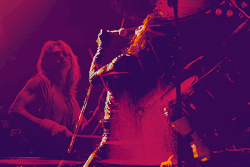
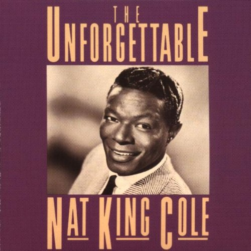
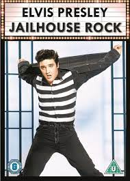
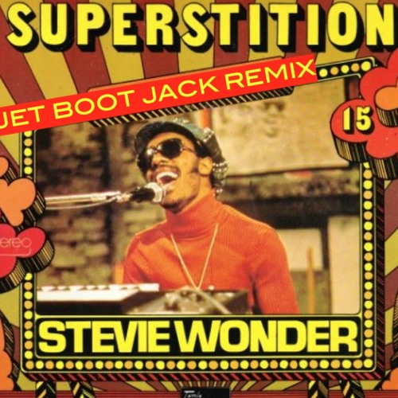
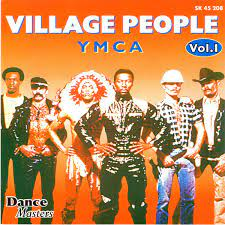
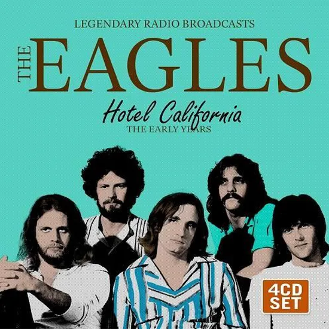
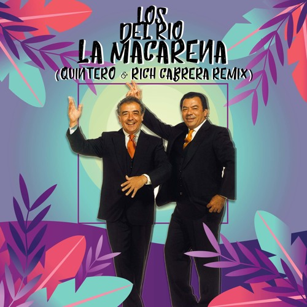

Es todo lo que estabas buscando, solo necesitas esto y nada más...

- Encuentra aquí:
- 🔹Éxitos musicales
Canciones que marcaron la historia y perduran en el tiempo.
- 🔹Selección
Te mostramos las mejores canciones de cada año en el transcurso de 1950 a 1999.
- 🔹Descripciones
Te traemos la información de los artistas íconos del siglo XX.
Década de 1950

Good Night Irene

The Unforgettable

Singin In The Rain

That's Amore

Mr Sandman

Rock Around The Clock

Hound Dog

Jailhouse Rock

La Bamba

Johnny Good
Década de 1960

The Twist

Can't Help Falling In Love

Stand By Me

I Want To Hold Your Hand

House Of The Rising Sun

I Can't Get Not

Strangers In The Night

Hello Goodbye

Hey Jude

Sugar Sugar
Década de 1970

Let It Be

Imagine

Superstition

Goodbye Yellow Brick Road

Sweet Home Alabama

Bohemian Rhapsody

Dancing Queen

Staying Alive

YMCA

Hotel California
Década de 1980

Another Brick In The Wall

Don't Stop Believin'

Eye Of The Tiger

Billie Jean

Girls Just Want To Have Fun

Take On Me

The Final Countdown

Never Gonna Give Up

Sweet Child o Mine

Lambada
Década de 1990

U Cant Touch This

Smells Like Teen Spirit

I Will Always Love you

What Is Love?

What's Up

Macarena

Wannabe

My Heart Will Go On

Baby One More Time

Livin'La Vida Loca
Subscribete a Éxitos del siglo pasado
Su contraseña debe tener entre 8 y 20 caracteres, contener letras y números, y no debe contener espacios, caracteres especiales ni emojis.